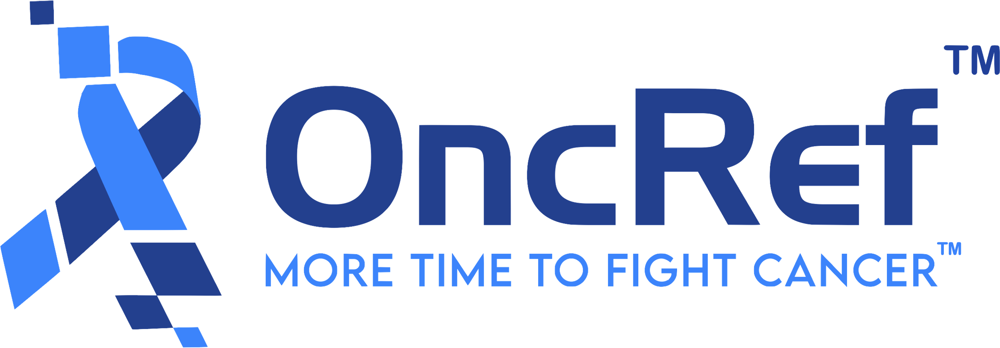
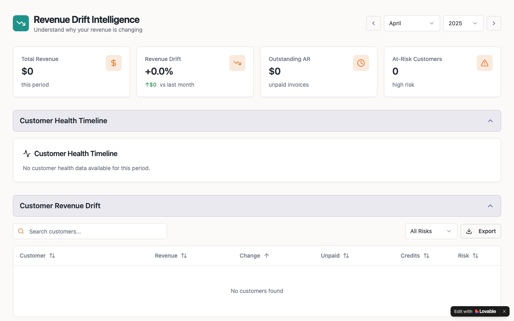

IT & AI Consultant
Rohan Sharma
I make enterprises AI-ready, from data strategy, forecasting, and machine learning to agentic workflows with Claude Code.

IT & AI Consultant
I make enterprises AI-ready, from data strategy, forecasting, and machine learning to agentic workflows with Claude Code.
I work with enterprises, startups, and teams as an independent IT consultant.
I assess your data, infrastructure, and teams, then build a pragmatic AI adoption roadmap that identifies high-ROI use cases and takes pilots to production. From audit to deployment, I make your enterprise AI-ready.
Get an AI Readiness AuditHands-on enablement with Claude Code and agentic AI workflows: setup, team training, custom skills and MCP integrations, and embedding AI coding agents into your development lifecycle so your engineers ship faster.
Book a Claude Code SessionEnd-to-end project delivery: predictive modeling, time-series forecasting, customer segmentation, and interactive dashboards in Tableau and Power BI, backed by cloud pipelines on AWS and Google Cloud.
Start a ProjectI do not just look at data, I interrogate it. Every dataset has a story buried under the noise, and I am the kind of person who keeps asking what happened, why it happened, and when did the pattern shift until the numbers actually make sense.
With a Masters in Data Science from Stevens Institute of Technology and a Computer Science background from Amity University Mumbai, I have built the toolkit to back up that curiosity, from machine learning and statistical modeling to cloud infrastructure on AWS.
Data-driven cross-selling strategies that contributed to over $10 million in revenue at Motilal Oswal, predictive models that cut data errors by 20%, and algorithmic approaches that improved trading decision accuracy.
I have worked across financial services, edtech, and AI startups, and in every role, the thread is the same: dig deeper, question the assumptions, and let the data lead the decision.
I hold certifications in Bloomberg Market Concepts, AWS Machine Learning, and Agile Project Management, and I have published research in peer-reviewed journals.
When I am not drilling into datasets, you will probably find me tracking flight routes on Flightradar24, reading up on the latest geopolitics, or keeping tabs on what is moving in the financial capital markets.
• Analyzed user behavior using Google Analytics and internal data, improving insight generation speed and reporting accuracy by 25%.
• Developed and optimized a scalable drug data pipeline, enabling reliable real-time data access for analytics and applications.
• Built Streamlit dashboards for drug comparison and integrated into the app, reducing manual analysis effort by 40% for stakeholders.

• Contributing software engineering expertise to the development and evaluation of AI model training data.
• Built a real-time ONNX (DistilBERT) moderation model, achieving <500ms latency and +18% detection accuracy.
• Designed hybrid rule-based + ML risk scoring (100+ patterns), reducing false positives by 22% through threshold tuning.
• Implemented a 3-tier moderation pipeline (Safe/Flagged/Critical), increasing automated filtering efficiency by 30%.

• Collected, validated, and transformed large datasets to support operational reviews, ensuring accuracy in faculty workload reporting.
• Performed detailed analysis to detect inconsistencies and outliers, escalating data quality issues to supervisors.
• Built dashboards in Tableau to improve transparency and help stakeholders spot trends, inefficiencies, and anomalies.
• Automated parts of the reporting workflow, improving efficiency by 30% and establishing repeatable monitoring procedures.

• Oversaw a community of 400 members on Ducklink, facilitating engagement and communication through regular updates and interactive events.
• Organizing and leading technical workshops and seminars annually, increasing member participation target by 40% year-over-year.
• Boosted membership by 30% over a 12-month period, expanding the association's reach and engagement within the graduate community.

• Evaluated and graded approximately 100 student assignments and exams per semester, maintaining a grading accuracy rate of 95%.
• Provided detailed feedback on 50+ assignments per semester, improving student performance and comprehension by 20% based on survey results.
• Managed an average of 5 hours per week for grading and administrative tasks, ensuring timely completion of all grading responsibilities within established deadlines.
• Led engagement programs, Pre-Orientation, and Orientation Week to support new students in their college transition. Offered continuous guidance throughout their first year to ensure a successful and seamless adjustment.
• Assisted new students through the course selection process, ensuring they chose courses that matched their academic aspirations. Linked them with campus resources to enrich their college experience.
• Fostered a welcoming community by organizing social and academic events, promoting peer connections, and encouraging student involvement to support their personal and professional growth.
• Worked with large volumes of trading and transactional data using SQL, AWS and Python to detect irregular behavior and strengthen controls.
• Automated PDF order reconciliation using AWS Textract, increasing compliance accuracy by 30% and improving exception monitoring.
• Built clustering and behavioral models to identify unusual client activity, supporting early detection of risk patterns and segmentation anomalies.
• Partnered with business, compliance, and technology teams to translate data findings into process changes and system enhancements.
• Implemented data quality and anomaly detection pipelines for ongoing monitoring, reducing errors by 20% and improving model reliability.
• Designed automated reconciliation processes that improved data integrity and ensured consistent alignment between on-prem and data lake tables.

• Analyzed intraday and historical equity data to assess trading behavior, spot patterns, and validate price movements.
• Built and tested LSTM and algorithmic models to detect unusual or irregular market activity.
• Tuned model thresholds to reduce false signals and strengthen trading decision support.
• Researched data quality and volume impacts on predictive accuracy to improve market-monitoring reliability.

Master of Science (M.Sc.) in Data Science
Provost Scholarship: Merit based scholarship of 10,000 USD.
CGPA: 3.9/4.0
Relevant Coursework:
Probability Theory Statistical Models Applied Machine Learning Optimization Models Deep Learning Data Visualization Marketing Analytics Supply Chain Logistics Time Series Analysis
Bachelor of Technology (B.Tech.) in Computer Science Engineering, Minors in Business Management
CGPA: 3.84/4.0 (First Class with Distinction)
Relevant Coursework:
Cloud Computing Database Management Systems Software Engineering Artificial Intelligence Financial Management Entrepreneurship Development
Built at the Light x Lovable x Abacum x JPMorganChase Finance Hackathon at JPM HQ in NYC, an event designed for CFOs and finance teams, with 550+ finance professionals on the waitlist. Using Light's data model, connected customers, contracts, invoice receivables, and credits through customerId to create one structured view of revenue health instead of scattered reports. The tool surfaces revenue concentration risk, overdue exposure, contract vs billed gaps, and credit leakage, then generates an executive-ready summary explaining what's happening and what action to take. Because no CFO asks for more dashboards; they ask, "What's the risk and what do we do about it?"
Live Demo
Developed ARIMA(2,0,2) and SARIMA(2,0,2)(0,1,1)[12] models to forecast Hawaiian Airlines monthly departure delays (non-seasonal) and Atlantic storm frequencies (seasonal), respectively. Executed full time series modeling workflow: ADF tests for stationarity, ACF/PACF for order selection, and AIC/BIC-based grid search for model optimization. Validated model assumptions through residual diagnostics (Shapiro-Wilk, Ljung-Box), confirming white noise and robustness of forecasts across 6-12 month horizons.
Check it out!
Leveraged 70 years of monthly data on inflation, unemployment, and bond yields to predict the U.S. Federal Funds Rate. After extensive preprocessing to ensure stationarity and reliability, the VARMA model achieved the best performance (RMSE: 0.15, MAE: 0.06). While VAR and SARIMAX also performed well, LSTM models struggled due to dataset-specific challenges. Notably, bond yields showed a strong correlation (0.86) with interest rates, followed by inflation (0.71). To ensure continuous deployment, built a CI/CD pipeline and deployed the model via Flask, enabling seamless access for financial analysts and policy-makers. Demonstrated the superiority of traditional econometric models over neural networks, with potential to develop hybrid approaches for enhanced forecasting accuracy. This solution empowers stakeholders in finance, real estate, and policy-making to make data-driven decisions with confidence in interest rate trends.
Check it out!
The 2024 EPA Vehicle Fuel Economy dataset provides detailed information on vehicle fuel efficiency, carbon emissions, and related attributes. This study uses statistical methods to analyze the data, aiming to identify factors affecting fuel economy and emissions, and to propose strategies for improved efficiency. The study includes data description, pre-processing, descriptive statistics, and inferential analysis, concluding with findings, implications, and future research directions. This analysis offers valuable insights for stakeholders on the environmental impact of vehicles, supporting informed decision-making and sustainable practices.
Check it out!
I Developed an AI model for employee attrition prediction using logistic regression, XGBoost, random forest, and cosine similarity, achieving 83.81% accuracy. It reduced attrition-related costs by 20% and improved retention rates by 15% through this innovative methodology. In addition to this it also provided the HR department with actionable insights to identify potential churners and implement proactive retention strategies and emphasized cost reduction by focusing on retaining existing employees instead of new hires.
Check it out!
We developed a movie recommendation system that suggests movies based on user input, providing suggestions and similarity scores. The process involved understanding the problem and key concepts, preprocessing data, visualizing it, and building the model. We used algorithms such as K-means Clustering, SVD (Singular Value Decomposition), and inbuilt algorithms from the Light FM library. The recommendation system was deployed using the TMDB API. This system includes features like allowing users to watch movie trailers directly on YouTube and displaying trending movies in the recommendations.
Check it out!
I have been working on finding ways to detect and categorize plant diseases using images of their leaves. Sadly, there still aren't any reliable methods available commercially for identifying these illnesses. In my study, I decided to try out two different types of convolutional neural network models - VGG and ResNet. I used a dataset of 61,486 images from Plant Village to train and test my models. These images were taken in labs and covered fourteen different kinds of leaves across thirty-nine categories. The best accuracy rates with the ResNet and VGG models were 81.6% and 70.4%, respectively, for non-inherited indices. I decided to split our dataset into train, test, and validation sets, with 36,584 for training, 15,679 for validation, and the rest for testing. What's interesting is that the deep-learning model using the VGG architecture needed less time to train on colored images compared to other methods, showing potential for efficient disease detection in plants.
Check it out!
I leveraged predictive analytics tools that utilized various models and algorithms for a wide range of applications. Choosing the right predictive modeling techniques was crucial for maximizing the benefits of predictive analytics and making data-driven decisions. To implement this, I acquired the dataset, imported necessary libraries, and loaded the dataset. Next, I identified and handled missing values, encoded categorical data, performed feature scaling, and split the data into training and testing sets. Using a linear regression model, I aimed to predict outcomes and identify key factors influencing the results. In the future, I plan to deploy the model using Flask on platforms like Heroku or GitHub for real-time analytics and wider accessibility.
Check it out!Rohan's expertise in statistical analysis has been instrumental for me, as Chair of the Department, in getting insights into student performance, faculty scheduling and loads, and budget management. His ability to transform complex data into dashboards and actionable insights has greatly enhanced our decision-making processes.
What impressed me most about Rohan is his initiative. After learning that an interviewer had an interest in Copilot technologies, he independently built a functional Copilot Studio agent within just a few hours as a proof of concept. That level of curiosity, execution, and commitment is rare.
Whether you need an AI adoption roadmap, hands-on Claude Code enablement for your engineering team, or a freelance data scientist to ship a project end-to-end, I'd love to hear about it.
rohansharma4050@gmail.com